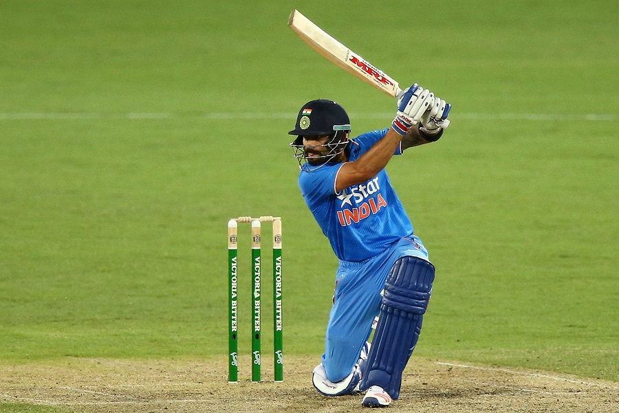
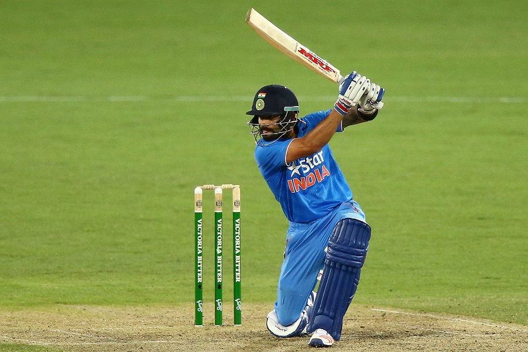

copy right ©2019, indian cricket
all rights reserved
developed & maintained by RANJAN PANIGRAHI
The final of the 1983 Prudential Cup was played between India and West Indies at Lord's on 25 June 1983. This was the third consecutive World Cup final appearance for West Indies. India playing their first finals defeated the West Indies to claim the title. It was the first World cup win for India.
The 2011 ICC Cricket World Cup was the tenth Cricket World Cup. It was played in India, Sri Lanka, and (for the first time) Bangladesh. India won the tournament, defeating Sri Lanka by 6 wickets in the final at Wankhede Stadium in Mumbai, thus becoming the first country to win the Cricket World Cup final on home soil.[1][2] India's Yuvraj Singh was declared the man of the tournament.


| before team | after team |
|---|
1883 world cup After losing the toss, India were asked to bat first against a West Indies team that arguably boasted the world's best bowling attack. Only Mohinder Amarnath (26 from 80 balls) and Kris Srikkanth (38 from 57 balls) put up any significant resistance as Andy Roberts, Malcolm Marshall, Joel Garner and Michael Holding ripped through the Indian batsmen, ably supported by Gomes. Surprising resistance by the tail allowed India to compile 183 (all out, 54.4 overs). Only three sixes were hit in the Indian innings, one from Srikkanth, one from Sandeep Patil (27 from 29 balls), and one from Madan Lal (17 from 27 balls). However, the Indian bowling exploited the weather and pitch conditions perfectly to bowl out the best batting line-up of the era for 140 from 52 overs in return, winning by 43 runs and completing one of the most stunning upsets in cricket history, defeating the previously invincible West Indies. Amarnath and Madan Lal (3–31) each took three wickets, and one memorable moment was the sight of Captain Kapil Dev running a great distance (about 18–20 yards) to take a catch to dismiss Richards, the West Indies top scorer with 33 from 28 balls. Amarnath was the most economical bowler, conceding just 12 runs from his seven overs while taking 3 wickets, and was once again awarded the Man of the Match award for his all-round performance.There was no "Man of the Series" award in 1983.
The 2011 ICC Cricket World Cup was the tenth Cricket World Cup. It was played in India, Sri Lanka, and (for the first time) Bangladesh. India won the tournament, defeating Sri Lanka by 6 wickets in the final at Wankhede Stadium in Mumbai, thus becoming the first country to win the Cricket World Cup final on home soil. India's Yuvraj Singh was declared the man of the tournament
| 1883 world cup india before cricket team | 2011 world cup india after cricket team |
|---|
Kapil dev born in (6 January 1959)Dev debuted as India's captain in the 1982–83 season against Sri Lanka (before the Pakistan tour) when Gavaskar was rested. His first assignment as regular captain was the tour of West Indies, where the biggest accomplishment was a lone ODI victory. Dev (72) and Gavaskar (90) led India to a huge score – 282/5 in 47 overs and Dev's 2 wickets aided India to restrict West Indies for 255 and a victory that Indian cricketers claim gave them the confidence to face the West Indies team in 1983 Cricket World Cup. Overall, Dev had a good series in West Indies as he scored a century to save the second test match as well as picking up 17 wickets (Average: 24.94)
Sachin Ramesh Tendulkar is born (24 April 1973).Tendulkar received the Arjuna Award in 1994 for his outstanding sporting achievement, the Rajiv Gandhi Khel Ratna award in 1997, India's highest sporting honour, and the Padma Shri and Padma Vibhushan awards in 1999 and 2008, respectively, India's fourth and second highest civilian awards.After a few hours of his final match on 16 November 2013, the Prime Minister's Office announced the decision to award him the Bharat Ratna, India's highest civilian award. December 2012, Tendulkar announced his retirement from ODIs. He retired from Twenty20 cricket in October 2013 and subsequently retired from all forms of cricket on 16 November 2013 after playing his 200th Test match, against the West Indies in Mumbai's Wankhede Stadium.Tendulkar played 664 international cricket matches in total, scoring 34,357 runs.Tendulkar scored his 100th international hundred on 16 March 2012, at Mirpur against Bangladesh in the Asia Cup.He became the first person in history to achieve this feat, which was also his first ODI hundred against Bangladesh.
Mahendra Singh Dhoni(MS DHONI. born 7 July 1981). commonly known as MS Dhoni, is an Indian international cricketer who captained the Indian national team in limited-overs formats from 2007 to 2016 and in Test cricket from 2008 to 2014. Under his captaincy, India won the 2007 ICC World Twenty20, the 2010 and 2016 Asia Cups, the 2011 ICC Cricket World Cup and the 2013 ICC Champions Trophy. A right-handed middle-order batsman and wicket-keeper, Dhoni is one of the highest run scorers in One Day Internationals (ODIs) with more than 10,000 runs scored and is considered an effective "finisher" in limited-overs formats.He is also regarded by some as one of the best wicket-keepers in modern limited-overs international cricket.Ms Dhoni was chosen to lead India in first ever World T20 in 2007. He made his captaincy debut against Scotland but the match was washed off. Thereon, he led India to the ICC World Twenty 20 trophy in South Africa, with a victory over arch-rivals Pakistan in an intensely fought final on 24 September 2007, and became the second Indian captain to have won a World Cup in any form of cricket, after Kapil Dev.Under Dhoni's captaincy, India won the 2011 World Cup. In the final against Sri Lanka, chasing 275, Dhoni promoted himself up the batting order, coming before an in-form Yuvraj Singh. When he came to bat, India needed more than six runs per over with three top order batsmen already dismissed. He started building a good partnership with Gautam Gambhir. Due to good strokeplay and active running between wickets, they kept up with the required run rate. Dhoni was on 60 off 60 balls but later accelerated with a greater frequency of boundaries, ending with 91 not out off 79 balls. Befitting the occasion, he finished the match off in style with a huge six over long-on off bowler Nuwan Kulasekara and won the Man of the Match award. Later in the post-match presentation, he admitted that he came up the order so as to counter the Muralitharan spin threat, as he was very familiar with Murali's bowling, who was his teammate in the Indian Premier League (IPL) franchise Chennai Super Kings. He had come after the dismissal of Virat Kohli, also a right-handed batsman. By partnering the left-handed Gambhir, he ensured a right-left combination at the crease that makes it difficult for bowlers to settle into a rhythm. The bat used by Dhoni in the final match was sold for ₹ 72 Lac. The money goes to Sakshi Rawat Foundation, operated by Dhoni's wife Sakshi Rawat to help orphan children.
Zaheer Khan (born 7 October 1978) is an Indian former cricketer who played all forms of the game for the Indian national team from 2000 till 2014. He was the second-most successful Indian pace bowler in Test cricket, behind Kapil Dev. Khan started his domestic career by playing for Baroda. In the early years of his career, Khan was known for his hostile seam and pace bowling, especially fast inch-perfect yorkers.He has taken 282 ODI wickets at an average of just over 29 runs per wicket taking 4 wickets in a match 6 times (4 times against Zimbabwe) including 32 wickets against Zimbabwe at an average of 17.46 runs per dismissal. He, along with other seamers like Javagal Srinath and Ashish Nehra helped India to make it to the finals of the 2003 World Cup. Zaheer finished the tournament as fourth highest wicket-taker – 18 wickets from 11 matches at an average of 20 runs per wicket. He is also the fourth highest wicket-taker in ODIs for India with 282 scalps behind Anil Kumble (337), Javagal Srinath (315) and Ajit Agarkar (288).
Virat Kohli born( 5 November 1988)is an Indian cricketer who currently captains the India national team. A right-handed top-order batsman.Kohli was India's leading run-getter in the five-match ODI series of the South African tour in January 2011, with 193 runs at an average of 48.25 including two fifties, both in Indian defeats. During the series, he jumped to number two spot on the ICC Rankings for ODI batsmen, and was named in India's 15-man squad for the World Cup. The inclusion of both Kohli and Raina in the World Cup squad resulted in speculations about which of the two batsmen will make it to the playing eleven. Days before India's first match of the tournament, Indian captain Dhoni indicated that the in-form Kohli is likely to be preferred over Raina. Kohli played in every match of India's successful World Cup campaign. He scored an unbeaten 100, his fifth ODI century, in the first match against Bangladesh and became the first Indian batsman to score a century on World Cup debut. In the next four group matches he had low scores of 8, 34, 12 and 1 against England, Ireland, Netherlands and South Africa respectively. Having returned to form with 59 against the West Indies, he scored only 24 and 9 in the quarter-final against Australia and semi-final against Pakistan respectively. In the final against Sri Lanka at Mumbai, he scored 35, sharing an 83-run partnership with Gambhir for the third wicket after India had lost both openers within the seventh over chasing 275. This partnership is regarded as "one of the turning points in the match", as India went on to win the match by six wickets and lift the World Cup for the first time since 1983.

| kapil dev | ms dhoni | sachin | zaheer khan | virat kholi |
|---|
Tendulkar is cross-dominant: he bats, bowls and throws with his right hand, but writes with his left hand. He also practices left-handed throws at the nets on a regular basis. Cricinfo columnist Sambit Bal has described him as the "most wholesome batsman of his time".His batting is based on complete balance and poise while limiting unnecessary movements and flourishes. He appears to show little preference for the slow and low wickets which are typical in India, and has scored many centuries on the hard, bouncy pitches in South Africa and Australia. He is known for his unique punch style of hitting the ball over square. He is also renowned for his picture-perfect straight drive, often completed with no follow-through. The straight drive is often said to be his favourite shot.[289] In 2008, Sunil Gavaskar, in an article he wrote in the AFP, remarked that "it is hard to imagine any player in the history of the game who combines classical technique with raw aggression like the little champion does". Equipment-wise, his bats tend to be heavier than the average batman. Sir Donald Bradman, considered by many as the greatest batsman of all time, considered Tendulkar to have a batting style similar to his. In his biography, it is stated that "Bradman was most taken by Tendulkar's technique, compactness and shot production, and had asked his wife to have a look at Tendulkar, having felt that Tendulkar played like him. Bradman's wife, Jessie, agreed that they did appear similar
Dhoni is a right-handed batsman and wicket-keeper. Initially, Dhoni appeared as a lower-order attacking batsman but he gradually changed his playing style to deal with high-pressure scenarios and his growing responsibility as a captain. He is a powerful hitter of the ball and is one of the fastest men in running between the wickets. Because of his explosive style of finished matches, he is nicknamed "The Finisher". His wicket-keeping skill is widely praised by cricket experts. He is quickest when it comes to stumpings. He has a world record for the highest number of stumpings by any wicket-keeper. He is the main wicket-keeper in the team but he occasionally bowls as a medium fast bowler.
Rohit Sharma is an aggressive batsman and attack oriented mixed with style and elegance. Due to this reason, he got the nickname "Hitman". He got this nickname when he scored his 3rd double century (208* in 153 balls) in One-day Internationals against Sri Lanka in 2017.He is usually an opening Batsman in limited-overs formats, but played most of his Test cricket as a middle-order batsman. Rohit has a flourishing one-day and T20 career, but yet to prove in the Test career.He is known for his unique punch style of hitting the ball over square. India's skipper Rohit Sharma is doing the Clive Lloyd thing by hiding his emotions as he smiles and turns back to his fielding position. This does not put any pressure on the person who dropped the catch or misfield and makes him want to give an extra effort — Former India captain Sunil Gavaskar on Rohit. Rohit is regarded as the best limited-overs batsmen in the world, especially as an opening batsman
Kohli is a naturally aggressive batsman with strong technical skills. He usually bats in the middle-order, but, on many occasions, has opened the innings as well. He bats with a slightly open-chested stance and a strong bottom-hand grip, and is said to have quick footwork.He is known for his wide range of shots, ability to pace an innings and batting under pressure.He is strong through the mid-wicket and cover region. He has said that the cover drive is his favourite shot, while also saying that the flick shot comes naturally to him. He does not play the sweep shot often, being called "not a natural sweeper of the cricket ball". His teammates have praised his confidence, commitment, focus and work ethics. Kohli is also known to be a "sharp" fielder.ohli is regarded as the best limited-overs batsmen in the world, especially while chasing. In ODIs, he averages around 69 in matches batting second as opposed to around 49 batting first. 23 of his 38 ODI hundreds have come in run-chases and he holds the record for most hundreds batting second. Regarding his impressive record batting second, Kohli has said "I love the whole situation that comes with chasing. I like the challenge of testing myself, figuring out how to rotate strike, when to hit a boundary.
 

| sachin | ms dhoni | virat | rohit |
|---|
Zaheer Khan was, without a doubt, one of the greatest assets of Indian cricket. A country starved of fast-bowling talent, could not have stumbled upon a greater gift at the turn of the century when Javagal Srinath, India's spearhead at the time, was into his thirties and in the twilight of his career. Zaheer ended up as one of the greatest new-ball bowlers of all time (particularly to left-handers), an expert at the art of reverse-swing (even with the old white ball), a potent bowler in the Test arena, and finally, a World Cup hero.
Bhuvneshwar Kumar On his international debut, a T20I match against Pakistan in December 2012, in which he took a three-wicket haul and in the ODI series that followed, he made his One Day International debut. After his five-wicket haul against South Africa in the first T20I in February 2018, Kumar became the first Indian bowler to take a five-wicket haul in all formats of the game.
Jasprit Jasbirsingh Bumrah Bumrah made his T20I debut on 27 January 2016 against Australia. In the two matches, T20I series against West Indies in August 2016, he became the bowler to claim most wickets (28) in Twenty20 Internationals in one calendar year surpassing the record of Dirk Nannes. In January 2017, in the second match of T20I series of England's 2016–17 India tour, Bumrah played a crucial role in India's win. He picked up two wickets and gave away 20 runs in his quota of four overs. Bowling at the death, in the final over, he took 2 wickets giving away only two runs when England needed eight to win. He was awarded Player of the Match, he produced an excellent yorker in the final ball, with 6 runs required. During the 2017 Sri Lanka tour, Bumrah recorded the most wickets (15) taken by any fast bowler in a bilateral ODI series of five or fewer matches. He is remembered for bowling a no-ball in the final of the Champions Trophy 2017 that resulted in a wicket
Anil Kumble 1996 Cricket World Cup The year 1996 proved to be extremely successful for Kumble as he claimed 61 ODI wickets at an average of 20.24. All in all, he was the leading wicket taker in the calendar year with 90 wickets at an average of 24.14 in Tests and ODIs combined. Kumble was selected in the Indian side for the 1996 World Cup. He was a part of all the seven matches that India played. Kumble was the leading wicket-taker in the tournament with 15 wickets at an average of 18.73.India played their first match against Kenya where Kumble took three for 28 runs, which helped restricting Kenya for just 199/6 in their 50 overs. India won the match comfortably by seven wickets.[34] In the subsequent matches he picked up three for 35 runs (against West Indies) and two wickets for 39 runs (against Sri Lanka) in group phase. India played against Pakistan in the quarter-final phase. Kumble picked up 3 for 48 in the match which India eventually won.In the semi-final they subsequently lost to Sri Lanka in which Kumble's performance was 1 for 51.

| zaheerkhan | bhuvneshwar | anilkumble | bumrah |
|---|